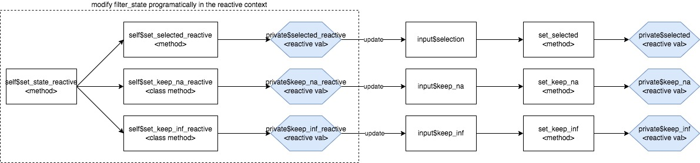

Abstract class to encapsulate filter states
FilterState.RdAbstract class to encapsulate filter states
Abstract class to encapsulate filter states
Details
This class is responsible for managing single filter item within
FilteredData class. Filter states depend on the variable type:
(logical, integer, numeric, factor, character, Date, POSIXct, POSIXlt)
and returns FilterState object with class corresponding to input variable.
Class controls single filter entry in module_single_filter_item and returns
code relevant to selected values.
factor,character:class = ChoicesFilterStatenumeric:class = RangeFilterStatelogical:class = LogicalFilterStateDate:class = DateFilterStatePOSIXct,POSIXlt:class = DatetimeFilterStateall
NAentries:class: FilterState, cannot be filtereddefault:
FilterState, cannot be filtered
Each variable's filter state is anR6object which containschoices,selected,varname,dataname,labels,na_count,keep_naand other variable type specific fields (keep_inf,inf_count,timezone). Object contains also shiny module (uiandserver) which manages state of the filter through reactive valuesselected,keep_na,keep_infwhich triggerget_call()and every R function call up in reactive chain.
Modifying state
Modifying a FilterState object is possible in three scenarios depicted below:

In the interactive session by directly specifying values of
selected,keep_naorkeep_infusingset_statemethod (to update all at once), or usingset_selected,set_keep_naorset_keep_infIn a
tealapplication by changing appropriate inputsUsing methods
set_selected_reactive,set_keep_na_reactive,set_keep_inf_reactivewhich serves as a programmatic API.
Methods
Method new()
Initialize a FilterState object
Usage
FilterState$new(
x,
varname,
varlabel = character(0),
input_dataname = NULL,
extract_type = character(0)
)Arguments
x(
vector)
values of the variable used in filtervarname(
character,name)
name of the variablevarlabel(
character(1))
label of the variable (optional).input_dataname(
nameorcall)
name of dataset wherexis taken from. Must be specified ifextract_typeargument is not empty.extract_type(
character(0),character(1))
whether condition calls should be prefixed by dataname. Possible values:character(0)(default)varnamein the condition call will not be prefixed"list"varnamein the condition call will be returned as<input_dataname>$<varname>"matrix"varnamein the condition call will be returned as<input_dataname>[, <varname>]
Method format()
Returns a formatted string representing this FilterState.
Method get_call()
Returns reproducible condition call for current selection relevant for selected variable type. Method is using internal reactive values which makes it reactive and must be executed in reactive or isolated context.
Method get_dataname()
Returns dataname
Method print()
Prints this FilterState object
Method set_na_rm()
Some methods needs additional !is.na(varame) condition to not include
missing values. When private$na_rm = TRUE is set, self$get_call returns
condition extended by !is.na condition.
Method set_state()
Set state
Method server()
Server module
Method ui()
UI Module
Arguments
id(
character(1))
id of shiny element. UI for this class contains simple message informing that it's not supported description Addsis.na(varname)before existing condition calls ifkeep_nais selected. Otherwise, if missings are found in the variable!is.nawill be added only ifprivate$na_rm = TRUEreturn (call) description Prefixed (or not) variableReturn variable name needed to condition call. If
isTRUE(private$use_dataset)variable is prefixed by dataname to be evaluated as extracted object, for exampledata$varreturn (nameorcall) Setskeep_nafield according to observedinput$keep_naIfkeep_na = TRUEis.na(varname)is added to the returned call. Otherwise returned call excludesNAwhen executed. Setskeep_nafield according tokeep_navalue passed inset_filter_state. Ifkeep_na = TRUEis.na(varname)is added to the returned call. Otherwise returned call excludesNAwhen executed. Set choicesSet choices is supposed to be executed once in the constructor to define set/range which selection is made from. parameter choices (
vector)
class of the vector depends on theFilterStateclass. return aNULL